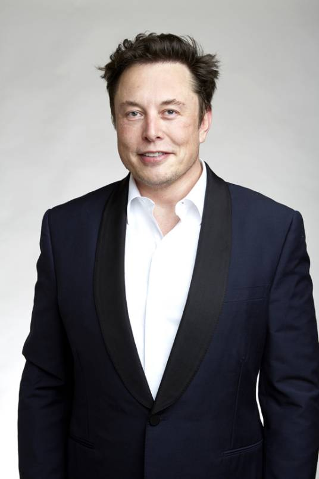

埃隆·里夫·马斯克（Elon Reeve Musk），1971年6月28日出生于南非的行政首都比勒陀利亚，美国、南非、加拿大三重国籍的企业家、工程师、发明家、慈善家，特斯拉（TESLA）创始人兼首席执行官 [73] [150]，太空探索技术公司（SpaceX）首席执行官兼首席技术官，太阳城公司（SolarCity）董事会主席 [2-3]、推特首席执行官 [182]，美国神经连接公司（Neuralink）创始人 [188]、OpenAI联合创始人 [183]，美国国家工程院院士 [95]，英国皇家学会院士 [39]，本科毕业于宾夕法尼亚大学经济学和物理学双专业 [1]。
1995年至2002年，马斯克与合伙人创办了Zip2和PayPal [5]。2002年，投资1亿美元成立太空探索技术公司（Space X），任首席执行官兼首席技术官 [20]。2004年，马斯克向特斯拉公司投资630万美元，并担任特斯拉董事长 [6]。2006年，马斯克投资1000万美元创办了光伏发电企业太阳城公司 [4]。2018年9月，卸任特斯拉董事长 [26]，但继续担任特斯拉首席执行官 [27]。2021年3月2日，胡润研究院发布《2021胡润全球富豪榜》，马斯克以1.28万亿元人民币财富首次成为世界首富 [63]。10月，马斯克成为历史上首位身价破3000亿美元的人，是福布斯统计史上最富有的人 [75]。12月，被评为美国《时代周刊》2021年度人物 [85]。2023年5月30日，埃隆·马斯克乘私人飞机到访中国。我国外交部部长秦刚、工业和信息化部部长金壮龙、商务部部长王文涛、中国贸促会会长任鸿斌在北京与马斯克举行会面。双方就中美经贸合作、特斯拉在华发展、科技领域的开放合作等议题进行了广泛和深入的交流。